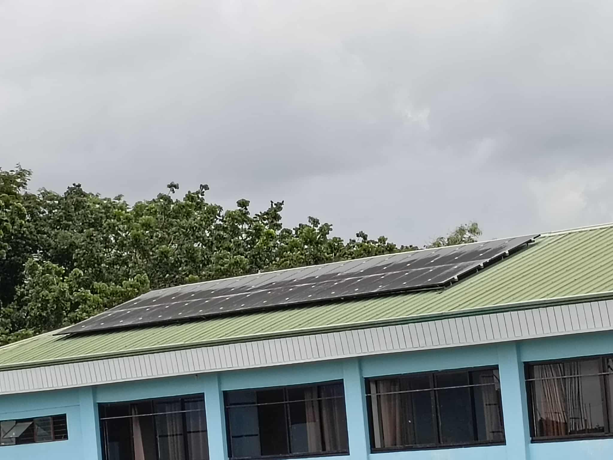

| Solar Panel Installations | |
|---|---|
|
|
 |
Urdaneta City University proudly champions renewable energy through its 4.5KW solar panel system—an enduring symbol of the university’s commitment to sustainability and environmental stewardship. Since its installation in 2017, this solar energy system has continued to operate efficiently, and as of 2025, it remains a vital source of clean power for the campus. Strategically installed to light up the Dr. Teofidez E. Calvero Building, the system effectively supports a significant portion of the building’s lighting and ventilation needs, generating energy savings that benefit both the university and the broader environment.
Through regular annual maintenance, the solar panel system maintains peak performance, demonstrating that renewable energy solutions can be reliable, cost-effective, and environmentally responsible. Beyond its technical benefits, the system represents UCU’s proactive role in climate action, showcasing how institutions can lead by example in reducing carbon emissions and promoting sustainable practices.
At UCU, we are doing more than simply lowering our carbon footprint—we are investing in a sustainable future. By integrating innovation, responsibility, and care into our energy systems, the university builds a lasting legacy of environmental stewardship that inspires and safeguards the well-being of generations to come.